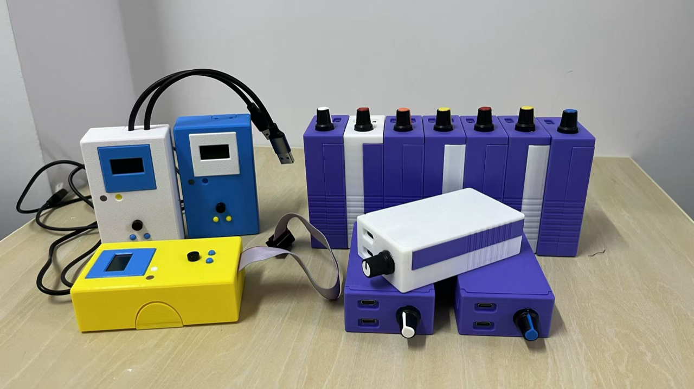
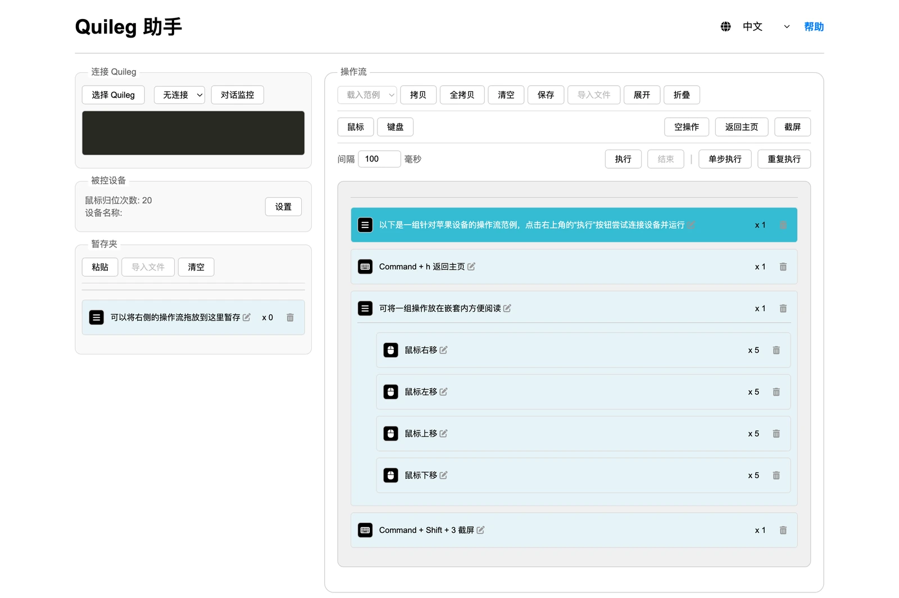
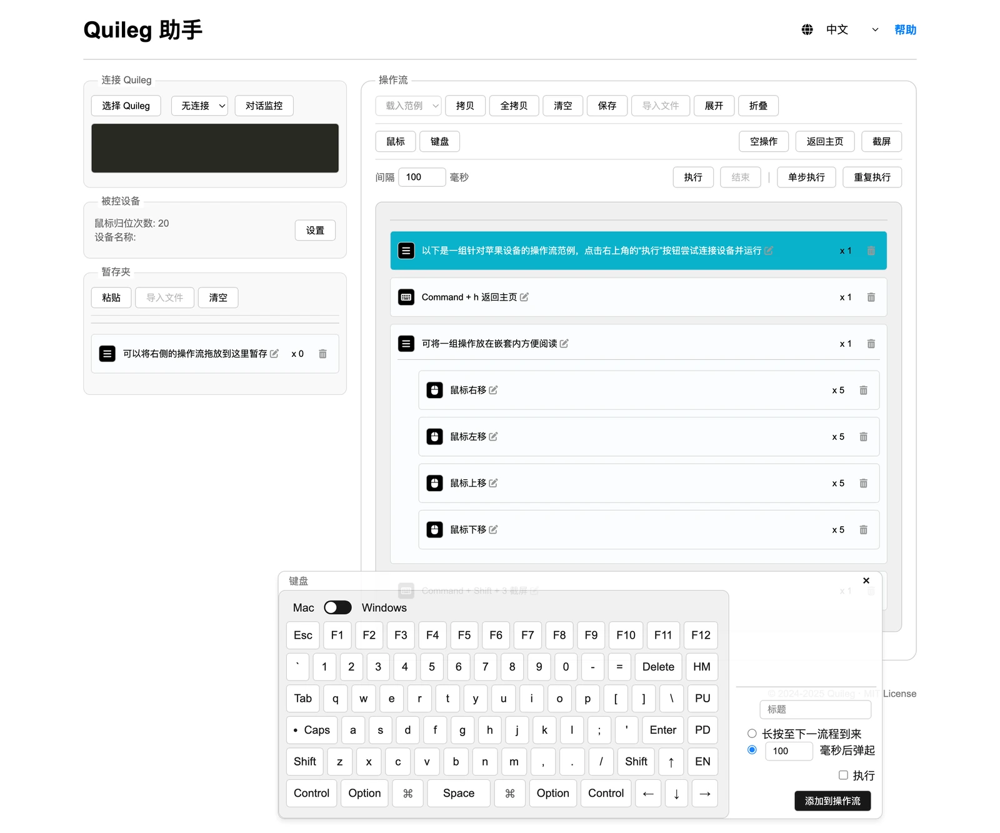
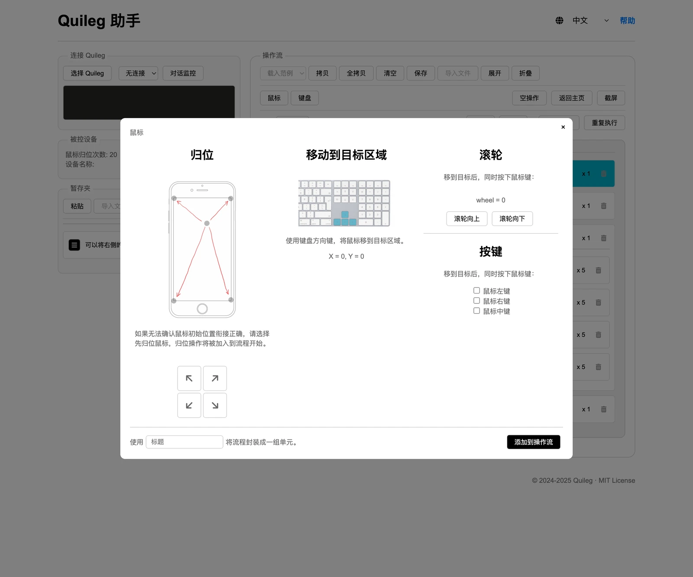
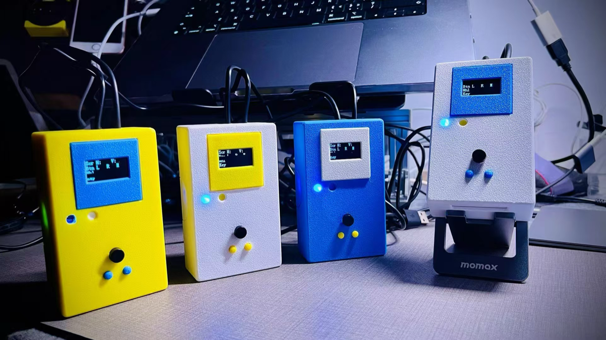
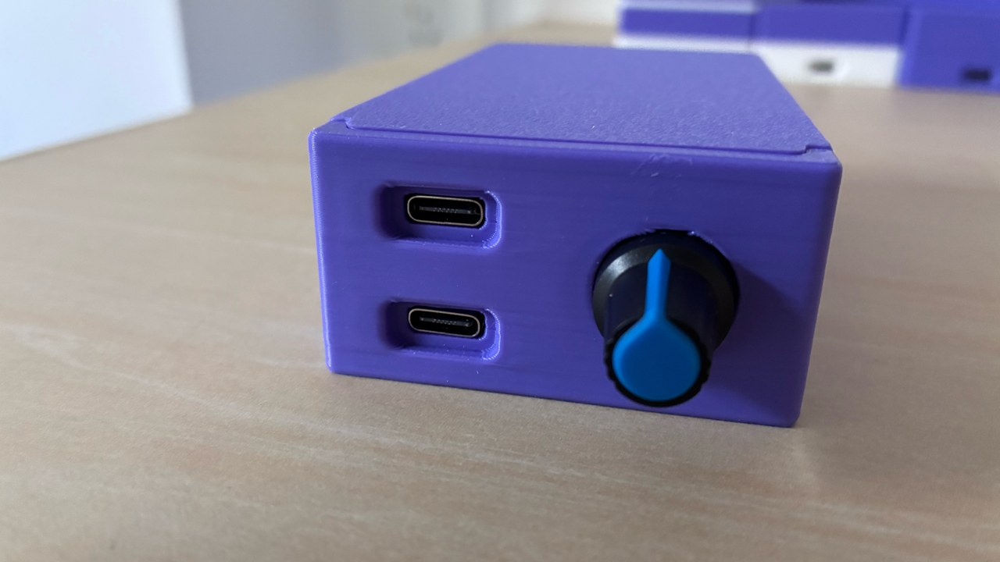

硬件级键鼠模拟
设备以标准 HID 键鼠身份出现，无需安装驱动。电脑眼里它就是一键盘加一鼠标。
2024 – 2025 · 第一代 / 第二代 · 已归档
一台以标准 USB 键盘与鼠标身份工作的小设备：把编排好的操作真实地按出来， 目标软件不需要任何接口，电脑上也不需要安装客户端。
这里是它的前两代——固件源码、网页上位机、串口协议与开发备忘，按当年的最终版本开源。

先说明白：这是已停止维护的历史项目，前两代当年未公开发布，现在按“原样”开源，用于学习、复刻与留档。不提供技术支持与维护，也不提供任何补丁。
当前项目是第三代 Quileg HID——ESP32-S3 走蓝牙，目标从电脑换成手机，让 AI 直接操作 iPhone。
能力
不注入、不破解、不修改目标软件——只是代替手指去按键、去移动鼠标。
设备以标准 HID 键鼠身份出现，无需安装驱动。电脑眼里它就是一键盘加一鼠标。
没有 API、老系统、专用客户端——只要是屏幕上能点的操作，就能被流程复现。
字母/数字/符号/功能键，修饰键任意组合，最多 6 键同按；左中右键、X/Y 位移、滚轮、拖拽。
流程是纯文本 .quileg：一行一条指令 + 中文注释，可导入导出、可版本管理。
原理
所有逻辑都在上位机，板子只负责“把收到的指令变成真实的按键与位移”。
在 Chrome / Edge 里打开单文件网页，用 Web Serial 连上设备，拖拽编辑流程。
9600 8N1，FF + 10 字节 + FE。键盘、鼠标、蜂鸣器各一种类型。
固件把指令转成键盘/鼠标 HID 报告，通过 USB 发给电脑——系统看到的是真实输入。
⌘ + H（按住 100 ms）FF 01 08 0A 0B 00 00 00 00 00 00 FE
│ │ │ │ └─ 键码 0x0B = h
│ │ │ └─ 按住 0x0A × 10ms = 100ms
│ │ └─ 修饰键 0x08 = 左 GUI（⌘）
│ └─ 键盘命令
└─ 帧头设备执行完会把同一帧回显回来，可当作 ACK。
上位机
不用装客户端：桌面版 Chrome / Edge 打开一个 HTML，用 Web Serial 连上设备就能用。没有后端、没有账号，流程也不上传。



一行一条 hex，拖拽排序；嵌套一层就是"一组操作"，读起来像脚本。
空操作 / 返回主页 / 截屏等常用帧是按钮；粘贴一大段 hex 可以批量生成条目。
单个 HTML，没有服务器；连接串口需要浏览器授权，页面不会自己连。
截图是在没有连接设备的情况下跑起来的——界面本身可以随便点；真正执行需要插上板子，并在 Chrome / Edge 里授权串口。
两代
都是 STM32F103 + USB HID 复合键鼠；第三代才换掉整个形态。

S H: / V: / B L R M / W / K 就是固件里写死的标签。
开始
不需要画 PCB：主控板用的是现成的 Nano STM32 V1.1（慧勤智远，60×50mm）。
Nano STM32 V1.1（慧勤智远，60×50mm）或同规格 STM32F103C8T6 板：8 MHz + 32.768 kHz 晶振、原生 USB（键鼠）、CH340X 串口。OLED、7 个按键、蜂鸣器按文档引脚表接到扩展排针。
第一代有屏；第二代无屏但有蜂鸣器。板载 LED0 = PA8、WK_UP = PA0。
用 STM32CubeIDE 打开 firmware/gen2-2025/，Build，再用 ST-Link 烧录。
⚠️ 若在 CubeMX 里点过 Generate Code，必须用仓库里的 usbd_hid 覆盖文件替换，否则只剩键盘或鼠标。
用桌面版 Chrome / Edge 打开 tools/web-assistant/quileg-assistant.html，连接串口，导入 examples/ 里的示例流程。
首次打开需要联网（前端库走 CDN）。
Core/Src/main.c 并重新编译。
协议
协议两代完全一致——同一份流程文件、同一个网页助手，两代都能用。
0x01 键盘[1] 修饰键位图 · [2] 按住时长（×10ms，0 = 按住不放） · [3]–[8] 最多 6 个键码 · [9] 重复次数
0x02 鼠标[1] 按键（左 0x01 / 右 0x02 / 中 0x04） · [2] X · [3] Y · [4] 滚轮（有符号 8 位）
0x03 蜂鸣器响 30 ms，并翻转一次 LED。其余字节忽略。
0x00 空操作保留。可用于占位或给上位机控制节奏。
⚠️ 串口收包是单缓冲、键盘按住会阻塞主循环——上位机必须按节奏发送，不能连发。 另外坐标是相对的（每帧 ≤ ±127），所以流程里要先“归位”再相对移动。
文档
从引脚、协议、架构，到编译烧录、救砖、迭代史与开发备忘。
常见问题
不能。前两代从未公开发布，也没有量产销售。这是当年源码的归档。
能。买一块 STM32F103C8T6 最小系统板，按引脚表接 OLED / 按键 / 蜂鸣器 / LED 即可，不需要画 PCB。仓库不提供原理图、PCB、BOM 与外壳文件。
设备是标准 USB HID 键鼠，理论上三大系统都认。当年主要在 macOS 上使用，Windows / Linux 未做系统验证。
不能直接打中文——设备只会发 HID 键码，等于敲 ASCII。当年的做法是用系统输入法选词，或先把中文放进剪贴板再 ⌘/Ctrl + V 粘贴。
靠外壳内置的 USB HUB：多块板子各自作为独立 HID 设备枚举，一根线出到电脑。固件没有主从协议，网页助手在「连接」时选不同串口、开多个浏览器页面分别控制。
从设备角度它发出的是真实 USB 键鼠事件，与人工输入在系统层面没有区别；但平台仍可能按行为特征做风控。请只在你有权操作的设备与账号上使用，并遵守平台条款。
“稳定地替人点电脑”这件事已经被更好的形态取代：能用接口/网页拿数据就用接口，需要操作真实界面时则用投屏 + AI 闭环（第三代）。
MIT 许可（ST 组件保留原许可）。已归档，不再维护，但足够你把一台设备做出来。